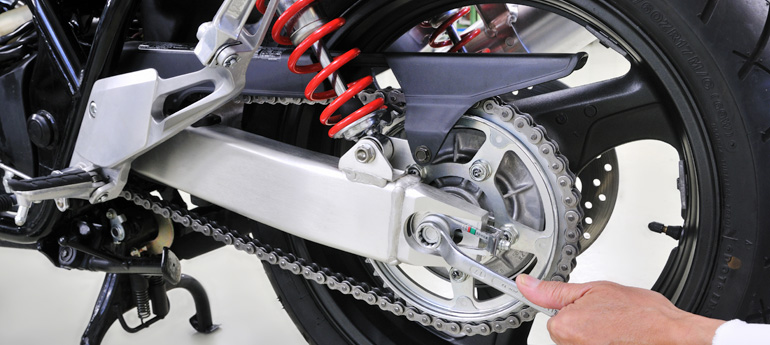

TURYSTYKA MOTOCYKLOWA: JAK PRZYGOTOWAĆ SIĘ DO WYJAZDU
Podróże motocyklowe są dla wielu motocyklistów sednem jazdy: nie tylko jechać, ale jeszcze być gdzieś, w jakimś konkretnym miejscu i celu. Użytkując motocykl jako pojazd rekreacyjny wcześniej czy później każdy spotka się z potrzebą przygotowania do wyjazdu. Nie ważne, czy będzie to solowy wypad, czy
Podróże motocyklowe są dla wielu motocyklistów sednem jazdy: nie tylko jechać, ale jeszcze być gdzieś, w jakimś konkretnym miejscu i celu. Użytkując motocykl jako pojazd rekreacyjny wcześniej czy później każdy spotka się z potrzebą przygotowania do wyjazdu.
Nie ważne, czy będzie to solowy wypad, czy wycieczka w kilka maszyn. Jakkolwiek nie poczuwam się do posiadania wszelkiej i jedynie prawdziwej wiedzy na ten temat, postaram się przedstawić kilka przydatnych wskazówek.

Motocykl przed wyjazdem W teorii to takie proste: unieruchomionym z powodu awarii pojazdem nigdzie nie dojedziemy. Tak to wygląda, prawda? Niestety, żyjemy w kraju, w którym zasadniczo ludzie nie czytają instrukcji obsługi, owocem czego są, na przykład, notoryczne na forach internetowych pytania o właściwy olej lub jego prawidłową ilość. Ponadto większość z nas swoje zainteresowanie jednośladami – co tu ukrywać – uprawia kosztem innych dziedzin życia, czasami niemal dosłownie „odejmując sobie od ust”, aby zatankować mechanicznego rumaka. Cóż, już kiedyś pisałem: nikt nie powiedział, że będzie tanio. Problemem wynikającym z takiego stosunku i możliwości finansowych jest, z pewnej konieczności, ograniczanie wydatków związanych z eksploatacją motocykla – a ten niestety w warunkach permanentnych oszczędności ma prawo odmówić współpracy. Krótki test: kto z nas wymienia przewody hamulcowe co 5 lat? A taką przecież trwałość generalnie oznaczają producenci.
Przed jakąkolwiek więc dłuższą podróżą należy koniecznie zainteresować się stanem maszyny, która będzie nas wozić na swoim siodle. Podstawą są niezbędne wymiany i czynności eksploatacyjne, jak: sprawdzenie stanu klocków hamulcowych, oleju i filtrów, regulacja zaworów, kondycja opon, naciąg łańcucha. Planując dłuższy wyjazd lepiej wymienić olej czy świece przed wymaganym przez producenta przebiegiem, niż później z obawą zaglądać w zionące coraz ciemniejszą barwą okienko kontrolne. Podobnie ma się sprawa z ogumieniem: lepiej nie szukać w obcych miastach (czy nawet kraju) sklepu i serwisu, ryzykując zakup nie tylko drogi, ale również źle dobrany. Banał? A kto pamięta, jaka jest minimalna głębokość bieżnika opony i ostatnio sprawdzał jego stan w swojej maszynie? Wszystko to lepiej zrobić przed wyjazdem, gdzie znamy swojego mechanika, a przy większym zestawie prac możemy jeszcze potargować się o rabat. Koszty gdzieś w odległym warsztacie prawie na pewno nie będą niższe, a poza tym nawet drobna awaria jest w stanie skutecznie zepsuć wyjazd.
Odrębnym aspektem przygotowań do podróżowania są akcesoria ułatwiające jazdę lub podnoszące jej komfort w niesprzyjających warunkach. Mam tu na myśli przede wszystkim najłatwiejsze do instalacji turystyczne szyby oraz nieco bardziej skomplikowane akcesoria, jak dodatkowe gniazdka, na przykład do zasilania nawigacji GPS czy interkomu lub podgrzewane manetki. Wartość tych ostatnich doceni każdy, komu dłonie zgrabiały podczas przejazdów na dużych wysokościach w górach, gdzie nawet latem panują niskie temperatury, albo przy gwałtownym ochłodzeniu po intensywnej letniej burzy. Warunki takie nie są niczym zaskakującym w naszej szerokości geograficznej, gadżet ten nie jest więc zarezerwowany dla podróżników wybierających się na koło podbiegunowe. Na naszym rynku dominują w tym segmencie: tańsze, ale cieszące się mniejszym zaufaniem użytkowników Saito oraz nieco droższe manetki Oxford. Jedne i drugie mają swoich zwolenników. Podobnie ma się sprawa z podwyższoną szybą, dającą lepszą osłonę przed podmuchem idącym ponad nią na kask i ramiona kierowcy. Z przyczyn raczej estetycznych niż praktycznych producenci, zwłaszcza motocykli sportowych i sportowo-turystycznych, oszczędzają na tych kilku centymetrach pleksy. Przekłada się to niestety na wzmożony hałas generowany przez słabo osłonięty kask.
Wróc